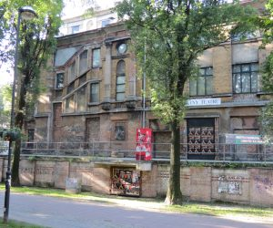
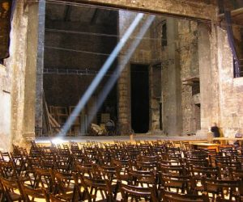
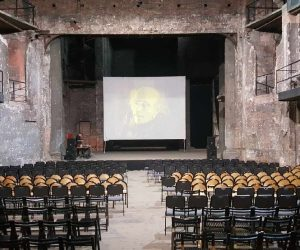

Budynek Teatru Victoria został wzniesiony w 1890 r.,
według projektu wykonanego przez pracownię „Zimmermann und Wache”.
Nazwa obiektu pochodzi od inwestora – spółki „Victoria GmbH”.
Teatr usytuowano w centrum miasta,
w zespole zabudowań, w skład którego wchodził tzw.
Dom Victoria oraz narożna kamienica zlokalizowana przy ul. Wilhalmstraβe
(obecna ul. Zwycięstwa). Pomieszczenia teatru, z nieprzystosowaną salą teatralną oraz
wejściem od strony zaniedbanego podwórza, stanowiły najmniej atrakcyjną część kompleksu.
Oprócz nich, w połączonych budynkach znajdował się hotel, kawiarnia, zakład kąpielowy oraz
lokale usługowe. Otwarcie teatru nastąpiło w 1899 r., po pierwszych pracach remontowych trwających w
latach 1897-1899. Kolejne remonty miały miejsce w roku 1906 oraz w latach 1910-1912 i 1916-1918.
Generalna przebudowa obiektu nastąpiła w 1924 r.
i odbywała się pod kierunkiem miejskiego radcy budowlanego Karla Schabika.
Zaaranżowano nowy wystrój i organizację wnętrza,
gruntownie zmodernizowano scenę oraz poprawiono akustykę i funkcjonalność sali teatralnej.

W sierpniu 1944 r. teatr został zamknięty, a w marcu 1945 r. podpalony przez żołnierzy Armii Czerwonej.
W okresie powojennym do degradacji budynku przyczyniło się m. in.
niewłaściwe zabezpieczenie obiektu, polegające na nakryciu go płytą żelbetową.
Na skutek ciężaru konstrukcji nastąpiło uszkodzenie ścian i fundamentów.
Negatywne zmiany nastąpiły także w wyniku zawilgocenia budynku.
W latach 90. podjęto prace mające na celu przystosowanie ruin do sezonowego użytkowania.
W wyniku działań podjętych z inicjatywy Fundacji Odnowy Teatru Miejskiego obiekt został odpowiednio
zabezpieczony i wyposażony.

Budynek teatru znajduje się w centrum miasta, w pobliżu ul. Zwycięstwa,
weście główne usytuowane jest od strony Alei Przyjaźni.
Część główna, mieszcząca scenę oraz widownię została wybudowana na rzucie zbliżonym do prostokąta,
zwężającym się uskokowo po stronie zachodniej.
Obiekt został wymurowany z cegły, z detalami architektonicznymi wykonanymi ze sztucznego kamienia. .
Wewnątrz mieści się prostokątna scena, z częściowo zachowaną konstrukcją,
będącą pozostałością dawnej sceny obrotowej oraz widownia, na planie wydłużonego prostokąta,
zamknięta trójbocznie. Dookoła widowni, na wyższych kondygnacjach znajdują się balkony.
Oryginalne elementy wyposażenia wnętrza nie zostały zachowane.
Obecnie teatr dostępny dla zwiedzających z zewnątrz a
wnętrze dostępne jest w trakcie sezonowych spektakli teatralnych i wydarzeń artystycznych.